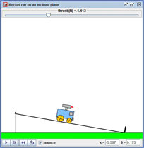
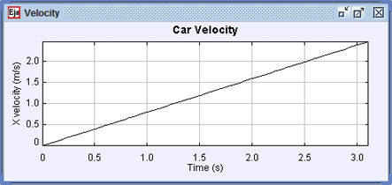

|  |  |
This simulation uses Easy Java Simulations (Ejs) to model the problem of a rocket car on an incline plane. When the car reaches the bottom of the incline it can be set to bounce (elastic collision) with the stop attached to the bottom of the incline. The total mass of the car is 2.0 kg which consists of the car body (1 kg), two front wheels (0.4 kg) and two rear wheels (0.6 kg). The front and rear wheels rotate and are uniform disks. In the simulation you can set the incline angle (in radians), the bounce, the thrust of the car's rocket (in Newtons), and you can drag the car to its initial position.